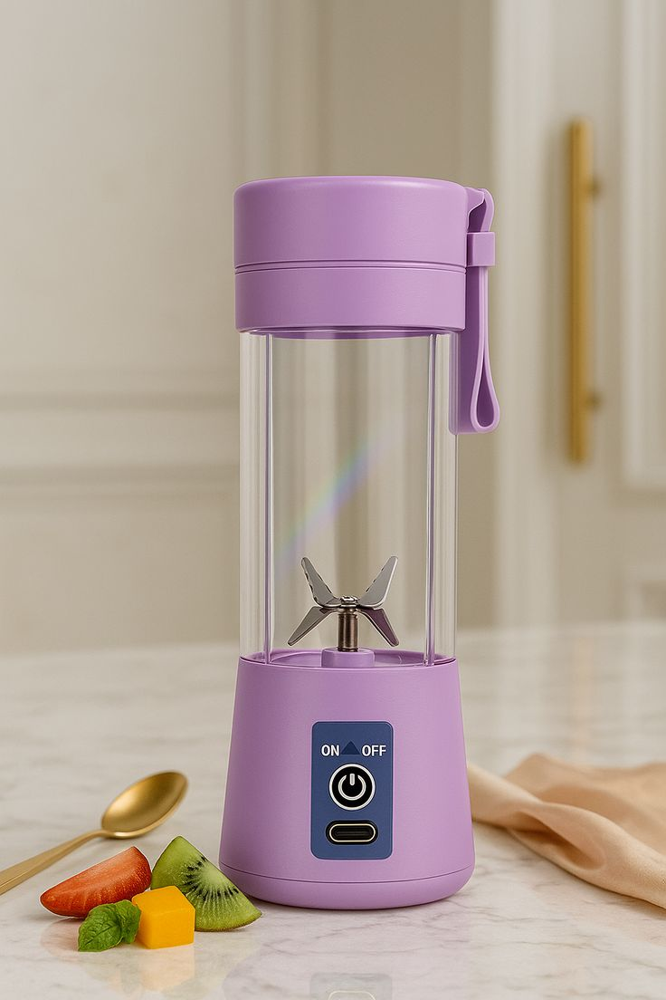

Home
Key Features and Benefits
How To Use
Order Now
About Us
Key Features and Benefits

Portability & Design: Lightweight (often under 0.5kg) and compact, fitting into gym bags, backpacks, or car cup holders. Power Source: USB rechargeable, allowing it to charge via power banks, laptops, or car adapters.
Performance: Generally equipped with 4 to 12 stainless steel blades capable of blending fruits, vegetables, ice, and protein shakes.
Ease of Use: Features a one-key switch operation and is easy to clean.
Materials: Frequently constructed with BPA-free plastic, food-grade materials, or borosilicate glass.
Typical Usage: On-the-go Nutrition: Preparing fresh juices and smoothies while commuting, at the gym, or traveling. Convenience: Quickly mixing protein powders, making baby food, or crushing small amounts of ice. Our devices are popular for their convenience, allowing users to drink directly from the blender container.
How To Use